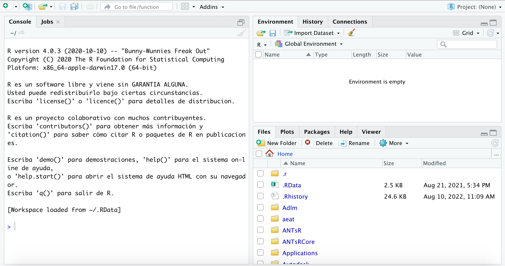

2.3 Tablas de frecuencias
La construcción de tablas de frecuencias a partir de datos ha constituido hasta hace bien poco la herramienta para la elaboración de gráficos y el cálculo de valores típicos en un estudio estadístico. Con la aparición de programas estadísticos (SPSS© o R) que generan automáticamente los gráficos y cálculos deseados, las tablas de frecuencia han perdido cierto protagonismo. Sin embargo no las vamos a obviar ya que son muy útiles para entender conceptos básicos en cualquier estudio estadístico, nos van a permitir introducir la notación matemática en Estadística y, con ellas, vamos a realizar nuestras primeras prácticas con la hoja de cálculo.
Una tabla de frecuencias básica nos indica qué valores concretos se dan en la muestra y con qué frecuencia. Vamos a ilustrarlo con una serie de ejemplos sencillos para distintos tipos de variables.
Ejemplo 1: en un estudio médico con 50 pacientes, se consideró la variable “número de piezas dentales perdidas” obteniéndose los siguientes datos:
1, 3, 0, 3, 2, 0, 2, 0, 0, 2, 0, 1, 0, 0, 1, 0, 1, 4, 0, 0, 1, 4, 0, 1, 0, 0, 1, 0, 0, 2, 5, 4, 2, 1, 1, 0, 0, 0, 5, 1, 3, 0, 1, 0, 1, 2, 0, 2, 1, 0
El tamaño de la muestra es n = 50. Si llamamos X a la variable Número de piezas dentales perdidas, vemos que ésta toma 6 valores distintos X = {0, 1, 2, 3, 4, 5].
Definimos:
Frecuencia absoluta \(f_i\) del valor \(x_i\): número de datos iguales a \(x_i\).
Frecuencia relativa \(p_i\) del valor \(x_i\): cociente entre la frecuencia absoluta y el tamaño de la muestra \(\left( p_i=\frac{f_i}{n} \right)\)
Porcentaje del valor \(x_i\): producto de la frecuencia relativa por 100.
Frecuencia absoluta acumulada \(F_i\) del valor \(x_i\): número de datos menores o iguales a xi.
Frecuencia relativa acumulada \(H_i\) del valor \(x_i\): cociente entre la frecuencia absoluta acumulada y el tamaño de la muestra\(\left( H_i=\frac{h_i}{n} \right)\)
Porcentaje acumulado del valor \(x_i\): producto de la frecuencia relativa acumulada por 100.
Así, en la siguiente imagen puede verse la tabla de frecuencias del ejemplo anterior (con 2 decimales) construida con Excel.

2.3.1 Tabla de frecuencias (Práctica con Excel©)
Para realizar esta práctica, debe tener descargado en su ordenador el archivo 1.practicas.xlsx.
En el siguente vídeo se muestran los pasos para realizar la práctica.
2.3.2 Tabla de frecuencias (Práctica con R)
Para realizar esta práctica, abra RStudio. Le aparecerá una ventana como la siguiente:

En el espacio de trabajo (Workspace) de abajo a la izquierda no tiene más que escribir (o copiar y pegar) el código que se le irá proporcionando y pulsar la tecla enter para ejecutarlo.
Recordamos que nuestra práctica consiste en obtener tablas de frecuencias de un conjunto de datos. Recordamos que en nuestra práctica tenemos datos de 50 pacientes con el número de piezas dentales perdidas.
Con el siguiente código ejecutable, vamos a almacenar esos 50 datos en un vector (serie de números) con el nombre de piezas_perdidas. R utiliza la expresion <- para definir el nombre con el que almacenamos los datos, piezas_perdidas en nuestro ejemplo, y la función c( ) ( de concatenar) para almacenar los datos.
Ejecute el siguente código en RStudio (tiene la opción de copiarlo haciendo clic en el icono Copy to Clipboard):
piezas_perdidas <- c(1, 3, 0, 3, 2, 0, 2, 0, 0, 2, 0, 1, 0, 0, 1, 0, 1, 4, 0, 0, 1, 4, 0, 1, 0, 0, 1, 0, 0, 2, 5, 4, 2, 1, 1, 0, 0, 0, 5, 1, 3, 0, 1, 0, 1, 2, 0, 2, 1, 0)Verá que en la ventana Environment (arriba a la derecha) le ha aparecido un elemento llamado piezas_perdidas de tipo numérico y longitud 50. RStudio ha almacenado el vector con los 50 datos.
Vamos a obtener de forma muy sencilla la primera tabla de frecuencias absolutas ejecutando el siguiente código:
table(piezas_perdidas)## piezas_perdidas
## 0 1 2 3 4 5
## 22 13 7 3 3 2Así, R ha contado el número de datos del vector piezas_perdidas y en el resultado podemos ver que hay 22 pacientes con 0 piezas perdidas, 13 con 1 pieza perdida, etc.
Para las frecuencias relativas, vamos a almacenar la tabla de frecuencias absolutas con el monbre de tabla y obtendremos la tabla de frecuencias relativas con la función prop.table:
tabla <- table(piezas_perdidas)
prop.table(tabla)## piezas_perdidas
## 0 1 2 3 4 5
## 0.44 0.26 0.14 0.06 0.06 0.04Pruebe a comparar estos resultados con los de Excel©.
Así, la frecuencia relativa de pacientes con 1 pieza perdida es 0.26 (26%).
Ahora, podemos obtener la tabla de frecuencias absolutas acumuladas:
cumsum(tabla)## 0 1 2 3 4 5
## 22 35 42 45 48 50Así, hay 45 pacientes con 3 o menos piezas dentales perdidas.
2.3.3 Tablas de frecuencias (Práctica 2con Excel©)
Para realizar esta práctica, debe tener descargado en su ordenador el archivo 1.practicas.xlsx y abrir la hoja/pestaña 350 datos.
En el siguente vídeo se muestran los pasos para realizar la práctica.
2.3.4 Tablas de frecuencias (Práctica 3 con Excel© )
Para realizar esta práctica, debe tener descargado en su ordenador el archivo 1.practicas.xlsx y abrir la hoja/pestaña 350 datos.
En el siguente vídeo se muestran los pasos para realizar la práctica.